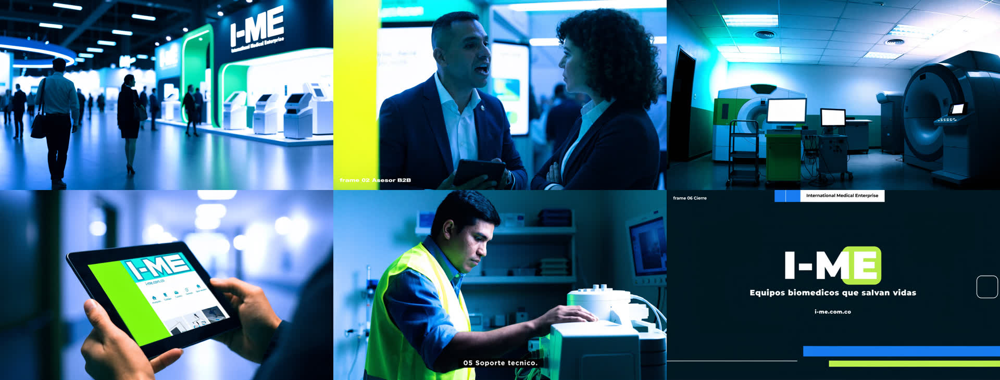
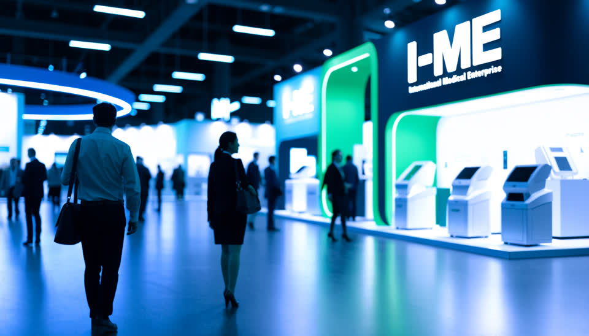
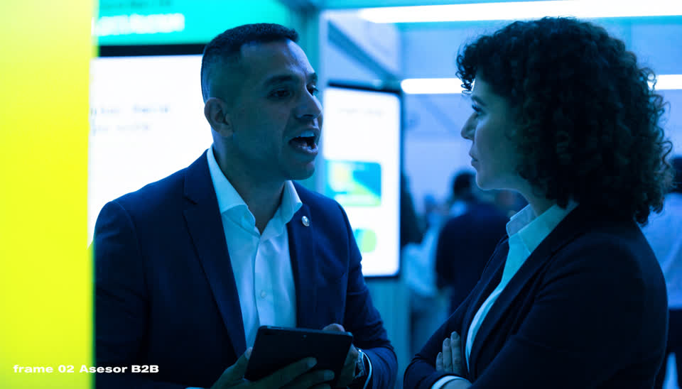
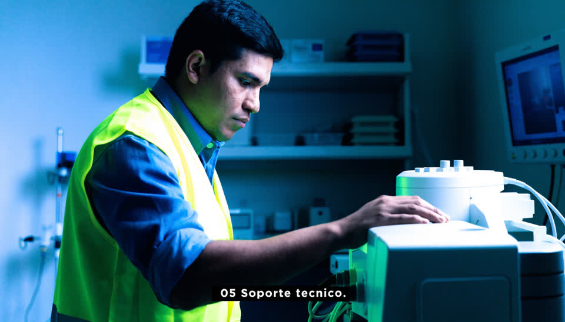
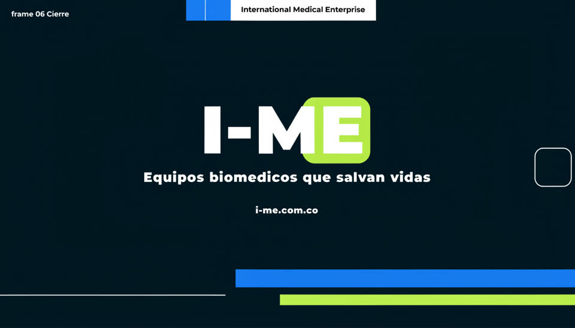

Preview low-res · I-ME / ACISE
Storyboard 16:9 a 960 px para validar look y arco. No es el corte final. Sin audio y sin logo oficial bloqueado.





Storyboard 16:9 a 960 px para validar look y arco. No es el corte final. Sin audio y sin logo oficial bloqueado.




